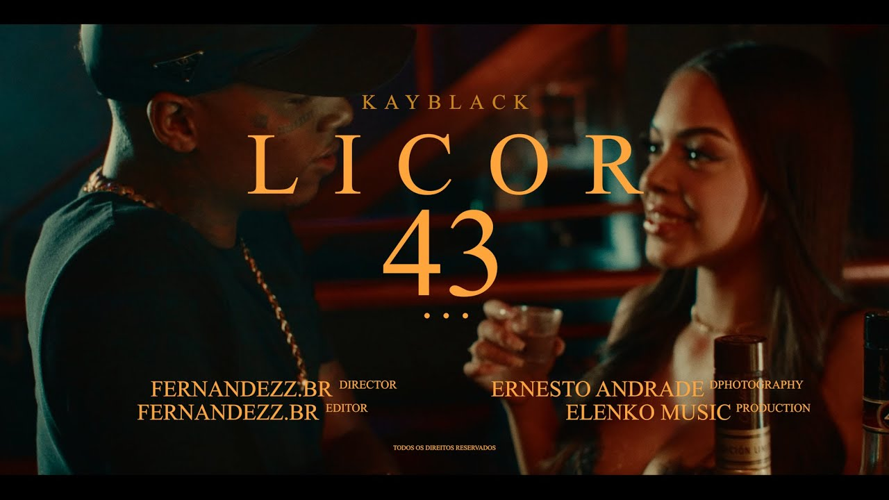
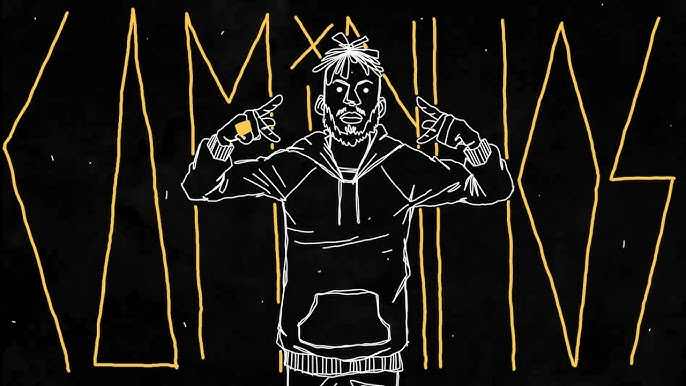

Meus projetos
Faixa "Me perode Kendrick"
Participei da mixagem e masterização do projeto ao lado de Niink.

Faixa "Licor 43"
Toda parte de masterização foi feita por mim.

Faixa "Caminhos"
Como a faixa "Me perdoe Kendrick" fiz muito da parte de mixagem e masterização da música.